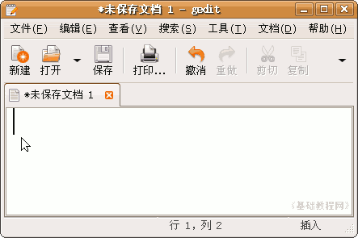
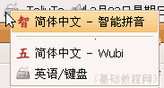
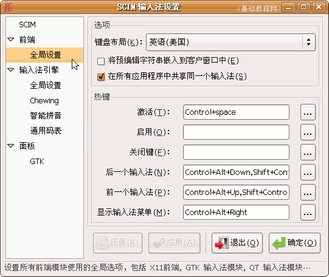
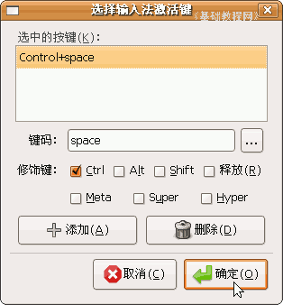
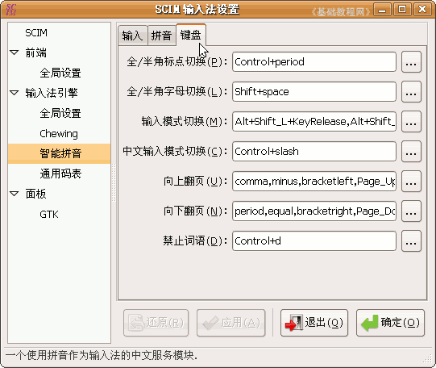

SCIM输入法操作基础
四、设置快捷键 返回目录
输入中的各个功能，可以使用输入法的面板条，也可以使用快捷键来操作，下面我们来 看一个练习；
1、设置快捷键
1）点上面板栏的菜单“应用程序－附件－文本编辑器”，打开一个文本窗口，点右上角的小键盘图标，选择“智能拼音”输入法；
 
2）这时在桌面右下角出来一个输入法的面板条，上面有输入法、全拼双拼、中英文、全角半角、简体、繁体、中英文标点等，常用的是中英文和全角半角；
3）按Ctrl＋空格键可以激活中文输入法，按Shift键可以切换中英文，按Shift＋空格键可以切换全角和半角，按Shift＋Ctrl键可以切换输入法，这些快捷键也可以自己设置；
4）在上面板栏的小键盘图标上点右键，选择“SCIM设置”，出来设置面板，选第一个前端里面的“全局设置”；

5）在右边的面板里可以设置各个热键(快捷键)，各个单词对应的键盘按键是：Control是Ctrl键，space是空格键，Alt和Shift和键一样的，Down是向下方向键，Right是向右方向键；
6）点“激活”右边的三个点小方框，这是浏览按钮，出来一个对话框，留下第一个Control＋space，其他的选中后，点下面的“删除”按钮，只留一个激活快捷键；
点“确定”，下次启动以后就可以使用这个快捷键了，其他的各个快捷键设置方法，可以点击相应项目后，选择“键盘”标签进行设置；

本节学习了在Ubuntu中设置SCIM快捷键的 基本方法，如果你成功地完成了练习，请继续学习下一课内容；本教程由86团学校TeliuTe制作|著作权所有
基础教程网：http://teliute.org/
美丽的校园……
转载和引用本站内容，请保留版权信息和本站链接。